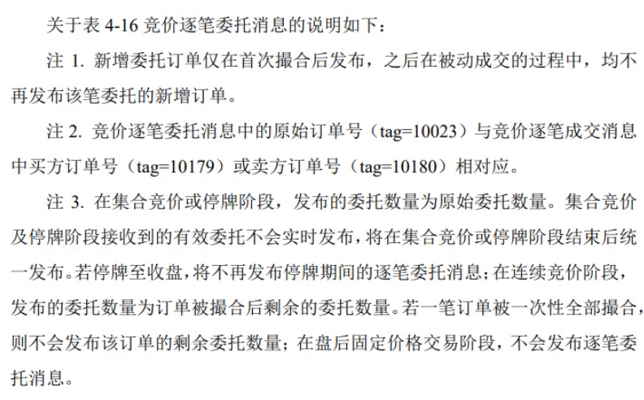

沪深股票高频系列(三)——逐笔数据重建与细节
✨ 沪深股票高频系列 ✨的第三章：
本文详细解答了：为何重建？如何重建准确的逐笔数据？对于使用代码实践的方法，文章中也给出了一定的建议（方法的选取建议参考个人的研究环境和要求）。
本文分别介绍沪深两市的逐笔数据重建细节。关注细节和方法，帮助我们准确地理解数据，构造特征。
NOTE：部分代码只是为了提取数据，读者无需关注。
上海交易所¶
逐笔委托¶
下面给出上交所的逐笔委托数据样例：
order_sql = """
SELECT *
FROM hfdata.stock_order
WHERE tradedt = '2021-12-20'
AND windcode = '600000.SH'
"""
order_data = client.query_dataframe(order_sql)
order_data.head(5)
样例数据输出：
| windcode | tradedt | tradetime | bs | orderprice | orderqty | orderno | pricetype | applseqnum | updatetime |
|---|---|---|---|---|---|---|---|---|---|
| 600000.SH | 2021-12-20 | 2021-12-20 09:15:00.170 | 1 | 7.71 | 100 | 213 | 0 | 168508 | 2022-10-28 23:03:01.450 |
| 600000.SH | 2021-12-20 | 2021-12-20 09:15:00.170 | 1 | 7.79 | 100 | 236 | 0 | 168509 | 2022-10-28 23:03:01.450 |
| 600000.SH | 2021-12-20 | 2021-12-20 09:15:00.210 | 1 | 7.79 | 100 | 343 | 0 | 168510 | 2022-10-28 23:03:01.450 |
| 600000.SH | 2021-12-20 | 2021-12-20 09:15:00.280 | 1 | 7.71 | 100 | 379 | 0 | 168511 | 2022-10-28 23:03:01.450 |
| 600000.SH | 2021-12-20 | 2021-12-20 09:15:00.280 | 1 | 8.50 | 200 | 387 | 0 | 168512 | 2022-10-28 23:03:01.450 |
以 order_data 为例：
bs: 委托方向（买：bs = 1, 卖：bs = 2）orderprice、orderqty: 该笔委托的价格与量orderno: 委托订单号，即该委托的唯一编号pricetype:pricetype= 10 为撤单（对上交所股票，其余pricetype取值无意义）applseqnum: 无意义
逐笔成交¶
下面给出上交所的逐笔成交数据样例：
deal_sql = """
SELECT *
FROM hfdata.stock_deal
WHERE tradedt = '2021-12-20'
AND windcode = '600000.SH'
AND tradetime >= toDateTime64('2021-12-20 09:30:00.000', 3)
"""
deal_data = client.query_dataframe(deal_sql)
deal_data.head(5)
样例数据输出：
| windcode | tradedt | tradetime | bs | tradeprice | tradeqty | tradeamt | tradeno | tradebuyno | tradesellno | tradetype | applseqnum | updatetime |
|---|---|---|---|---|---|---|---|---|---|---|---|---|
| 600000.SH | 2021-12-20 | 2021-12-20 09:30:01.670 | 1 | 8.56 | 1 | 8.56 | 37528 | 254198 | 3156 | 0 | 296510 | 2022-10-28 23:45:47.004 |
| 600000.SH | 2021-12-20 | 2021-12-20 09:30:01.670 | 1 | 8.56 | 99 | 847.44 | 37529 | 254198 | 21113 | 0 | 296511 | 2022-10-28 23:45:47.004 |
| 600000.SH | 2021-12-20 | 2021-12-20 09:30:01.940 | 2 | 8.55 | 2132 | 18228.60 | 38384 | 162577 | 256992 | 0 | 299883 | 2022-10-28 23:45:47.004 |
| 600000.SH | 2021-12-20 | 2021-12-20 09:30:01.940 | 2 | 8.55 | 2968 | 25376.40 | 38385 | 165302 | 256992 | 0 | 299884 | 2022-10-28 23:45:47.004 |
| 600000.SH | 2021-12-20 | 2021-12-20 09:30:02.670 | 2 | 8.55 | 1600 | 13680.00 | 41619 | 165302 | 266837 | 0 | 311981 | 2022-10-28 23:45:47.004 |
以 deal_data 为例：
bs: 内外盘方向（外盘：bs=1主买，内盘：bs=2主卖）tradeno: 逐笔成交订单号tradebuyno、tradesellno: 成交双方对应委托单号tradetype: 上交所无意义applseqnum: 上市无意义
逐笔委托与成交的关联¶
从实际交易逻辑考虑，任何一条订单的撮合与成交，一定来自买卖双方的委托单。因此，逐笔委托记录委托单方的订单号，逐笔成交记录成交双方的订单号，我们可以通过 逐笔委托 的 orderno 字段，在 逐笔成交 中找到对应委托单的成交情况，反之亦然。
以 deal_data 中第一条逐笔成交为例。
deal_data.head(1)
样例数据输出：
| windcode | tradedt | tradetime | bs | tradeprice | tradeqty | tradeamt | tradeno | tradebuyno | tradesellno | tradetype | applseqnum | updatetime |
|---|---|---|---|---|---|---|---|---|---|---|---|---|
| 600000.SH | 2021-12-20 | 2021-12-20 09:30:01.670 | 1 | 8.56 | 1 | 8.56 | 37528 | 254198 | 3156 | 0 | 296510 | 2022-10-28 23:45:47.004 |
该笔成交来自 tradebuyno=254198、tradesellno=3156 两笔委托的撮合。
我们在 逐笔委托 中查看相关委托的信息。
order_data[(order_data['orderno'] == 254198) | (order_data['orderno'] == 3156)]
| windcode | tradedt | tradetime | bs | orderprice | orderqty | orderno | pricetype | applseqnum | updatetime |
|---|---|---|---|---|---|---|---|---|---|
| 600000.SH | 2021-12-20 | 2021-12-20 09:15:00.500 | 2 | 8.56 | 100 | 3156 | 0 | 168530 | 2022-10-28 23:03:01.450 |
显然，我们在 逐笔委托 中定位了卖方委托单。
同时，我们也发现 orderno=254198 委托买单并不在 逐笔委托 中。
事实上，委托订单不会凭空消失，其原因涉及到上交所对“一次性撮合成交”的数据发送方式。
一次性撮合成交¶
一次性撮合成交：订单发送到交易所的撮合平台后立即成交，不需要在订单簿中排队。
在沪深交易所中，主要有以下情况会导致一次性撮合成交：
- 市价单：直接以市价成交
- 限价单中的主买卖单：主买（限价买单价格设为大于等于盘口卖一价），主卖（限价卖单价格设为小于等于买一价）
如图： 
对于一次性撮合成交委托记录，上交所直接记入 逐笔成交 表，不记入 逐笔委托 表。
- 若全部成交，则不记入逐笔委托，全部记入逐笔成交，此时委托单的委托数量为逐笔成交中对应的成交量的和。
以上文 tradebuyno=254198 为例：
该笔委托在逐笔委托 order_data 中无记录，在逐笔成交 deal_data 中有两条记录，记录在 tradebuyno 为买方，与两条成交记录的 bs=1 主买方向符合，并且 tradeprice 相同。
在实际市场中，开盘后某买家已能够立即撮合的价格，吃掉了在集合竞价阶段剩余的卖单，包括 orderno=3156 和 orderno=21113。并且，该笔立即撮合的委托买单的总委托量应为 1+99=100。
order_data[order_data['orderno'] == 254198]
样例数据输出：
| windcode | tradedt | tradetime | bs | orderprice | orderqty | orderno | pricetype | applseqnum | updatetime |
|---|---|---|---|---|---|---|---|---|---|
deal_data[deal_data['tradebuyno'] == 254198]
样例数据输出：
| windcode | tradedt | tradetime | bs | tradeprice | tradeqty | tradeamt | tradeno | tradebuyno | tradesellno | tradetype | applseqnum | updatetime |
|---|---|---|---|---|---|---|---|---|---|---|---|---|
| 600000.SH | 2021-12-20 | 2021-12-20 09:30:01.670 | 1 | 8.56 | 1 | 8.56 | 37528 | 254198 | 3156 | 0 | 296510 | 2022-10-28 23:45:47.004 |
| 600000.SH | 2021-12-20 | 2021-12-20 09:30:01.670 | 1 | 8.56 | 99 | 847.44 | 37529 | 254198 | 21113 | 0 | 296511 | 2022-10-28 23:45:47.004 |
- 若部分立即成交，则先返回立即撮合成交部分的逐笔成交记录，之后再返回剩余未成交的逐笔委托记录，直到账单全部被成交，再次返回对应的逐笔成交数据。
以上文案例中 tradebuyno=10633404 为例：
该委托买单在逐笔委托中对应 orderno=10633404 的委托买单，其委托量 orderqty=7700，委托时间 tradetime=14:52:31，在逐笔成交中对应多条 tradebuyno=10633404 成交记录，累计总成交量 tradeqty=10000，多个委托时间 14:52:31 到 14:52:33。
在实际市场中，交易者首先以 orderprice=8.57 价格下了 orderqty=10000 的买单，其中消耗了对手盘的 tradeqty=2300=2000+300 委托卖单，成交的方向为 bs=1 主买，剩余未立即成交的记入逐笔委托数据，并且逐笔委托的tradetime和逐笔成交的tradetime相同。未成交的部分，留在委买队列中，在 tradetime=14:52:33 被后续的卖单依次吃掉，此时逐笔成交的方向为 bs=2 主卖。
order_data[order_data['orderno'] == 10633404]
样例数据输出：
| windcode | tradedt | tradetime | bs | orderprice | orderqty | orderno | pricetype | applseqnum | updatetime |
|---|---|---|---|---|---|---|---|---|---|
| 600000.SH | 2021-12-20 | 2021-12-20 14:52:31.870 | 1 | 8.57 | 7700 | 10633404 | 0 | 16713861 | 2022-10-28 23:03:01.450 |
deal_data[deal_data['tradebuyno'] == 10633404]
样例数据输出：
| windcode | tradedt | tradetime | bs | tradeprice | tradeqty | tradeamt | tradeno | tradebuyno | tradesellno | tradetype | applseqnum | updatetime |
|---|---|---|---|---|---|---|---|---|---|---|---|---|
| 600000.SH | 2021-12-20 | 2021-12-20 14:52:31.870 | 1 | 8.57 | 2000 | 17140.0 | 6601958 | 10633404 | 10631528 | 0 | 16713859 | 2022-10-28 23:45:47.004 |
| 600000.SH | 2021-12-20 | 2021-12-20 14:52:31.870 | 1 | 8.57 | 300 | 2571.0 | 6601959 | 10633404 | 10632315 | 0 | 16713860 | 2022-10-28 23:45:47.004 |
| 600000.SH | 2021-12-20 | 2021-12-20 14:52:32.850 | 2 | 8.57 | 1000 | 8570.0 | 6602407 | 10633404 | 10634087 | 0 | 16714981 | 2022-10-28 23:45:47.004 |
| 600000.SH | 2021-12-20 | 2021-12-20 14:52:33.190 | 2 | 8.57 | 4700 | 40279.0 | 6602568 | 10633404 | 10634344 | 0 | 16715386 | 2022-10-28 23:45:47.004 |
| 600000.SH | 2021-12-20 | 2021-12-20 14:52:33.190 | 2 | 8.57 | 1000 | 8570.0 | 6602569 | 10633404 | 10634345 | 0 | 16715387 | 2022-10-28 23:45:47.004 |
| 600000.SH | 2021-12-20 | 2021-12-20 14:52:33.190 | 2 | 8.57 | 1000 | 8570.0 | 6602570 | 10633404 | 10634346 | 0 | 16715388 | 2022-10-28 23:45:47.004 |
- 若全部未立即成交，并且后续每部分依次成交／一次性全部成交。首先完整记入逐笔委托记录，之后再次返回逐笔成交记录。
以上文 tradesellno=21113 为例：在逐笔委托中对应 orderno=21113 委托订单，其委托量为 100；在逐笔成交中有两条对应记录，其 tradeprice 相等且和 orderprice 相等，并且委托总量 99+1=100。
在实际市场中，交易者在集合竞价时未成交的委托卖单，开盘后被不同的买单依次吃掉，订单委托方向为卖单，成交的方向为主买。
order_data[order_data['orderno'] == 21113]
样例数据输出：
| windcode | tradedt | tradetime | bs | orderprice | orderqty | orderno | pricetype | applseqnum | updatetime |
|---|---|---|---|---|---|---|---|---|---|
| 600000.SH | 2021-12-20 | 2021-12-20 09:15:01.470 | 2 | 8.56 | 100 | 21113 | 0 | 168667 | 2022-10-28 23:03:01.450 |
deal_data[deal_data['tradesellno'] == 21113]
样例数据输出：
| windcode | tradedt | tradetime | bs | tradeprice | tradeqty | tradeamt | tradeno | tradebuyno | tradesellno | tradetype | applseqnum | updatetime |
|---|---|---|---|---|---|---|---|---|---|---|---|---|
| 600000.SH | 2021-12-20 | 2021-12-20 09:30:01.670 | 1 | 8.56 | 99 | 847.44 | 37529 | 254198 | 21113 | 0 | 296511 | 2022-10-28 23:45:47.004 |
| 600000.SH | 2021-12-20 | 2021-12-20 09:30:02.900 | 1 | 8.56 | 1 | 8.56 | 43021 | 270752 | 21113 | 0 | 316845 | 2022-10-28 23:45:47.004 |
简单总结, 对于上交所委托订单，我们需要结合 逐笔委托 和 逐笔成交，而使用 orderno、tradebuyno、tradesellno 和 tradetime 可以帮助我们准确定位并结合订单。
撤单¶
Note
对于未能成交，又未被撤回的订单，交易所会在交易日结束后，自动取消这些订单并在更晚时返还金额至交易者账户。
在委托后，可以直接全部撤单，部分成交后撤全部剩余的订单。
上交所对撤单数据，记入逐笔委托中。在hfdata.stock_order中标记为pricetype=10。
上交所取重复记录，即新增委托时记录一次，撤单时再记录一次。如下案例，对orderno=3939912，在新增委托时记录为限价单，撤单时记录为pricetype=10。
order_data[order_data['orderno']==3939912]
| windcode | tradett | tradetime | bs | orderprice | orderqty | orderno | pricetype | applseqnum | updatetime | |
|---|---|---|---|---|---|---|---|---|---|---|
| 7826 | 600000.SH | 2021-12-20 | 2021-12-20 10:14:00.590 | 1 | 8.58 | 7600 | 3939912 | 0 | 6014704 | 2022-10-28 23:03:01.450 |
| 7936 | 600000.SH | 2021-12-20 | 2021-12-20 10:15:00.340 | 1 | 8.58 | 3500 | 3939912 | 10 | 6093586 | 2022-10-28 23:03:01.450 |
深圳交易所¶
逐笔委托¶
下面给出深交所的逐笔委托数据样例：
order_sql = """
SELECT *
FROM
hfdata.stock_order
WHERE
tradett = '2021-12-20'
AND windcode = '000001.SZ'
"""
order_data = client.query_dataframe(order_sql)
order_data.head(5)
| windcode | tradett | tradetime | bs | orderprice | orderqty | orderno | pricetype | applseqnum | updatetime | |
|---|---|---|---|---|---|---|---|---|---|---|
| 0 | 000001.SZ | 2021-12-20 | 2021-12-20 09:15:00 | 1 | 15.81 | 100 | 147 | 0 | 147 | 2022-10-28 23:02:33.344 |
| 1 | 000001.SZ | 2021-12-20 | 2021-12-20 09:15:00 | 1 | 15.99 | 100 | 355 | 0 | 355 | 2022-10-28 23:02:33.344 |
| 2 | 000001.SZ | 2021-12-20 | 2021-12-20 09:15:00 | 1 | 17.20 | 6400 | 357 | 0 | 357 | 2022-10-28 23:02:33.344 |
| 3 | 000001.SZ | 2021-12-20 | 2021-12-20 09:15:00 | 2 | 19.24 | 5700 | 533 | 0 | 533 | 2022-10-28 23:02:33.344 |
| 4 | 000001.SZ | 2021-12-20 | 2021-12-20 09:15:00 | 2 | 19.00 | 500 | 589 | 0 | 589 | 2022-10-28 23:02:33.344 |
逐笔成交¶
下面给出深交所的逐笔成交数据样例：
deal_sql = """
SELECT *
FROM
hfdata.stock_deal
WHERE
tradett = '2021-12-20'
AND windcode = '000001.SZ'
AND tradetime >= toDateTime64('2021-12-20 09:30:00.000', 3)
"""
deal_data = client.query_dataframe(deal_sql)
deal_data.head(5)
| windcode | tradett | tradetime | bs | tradeprice | tradeqty | tradeamt | tradeno | tradebuyno | tradesellno | tradetype | applseqnum | updatetime |
|---|---|---|---|---|---|---|---|---|---|---|---|---|
| 000001.SZ | 2021-12-20 | 2021-12-20 09:30:00.020 | 1 | 17.56 | 19900 | 349444.0 | 488264 | 488263 | 414189 | 0 | 488264 | 2022-10-28 23:45:03.472 |
| 000001.SZ | 2021-12-20 | 2021-12-20 09:30:00.020 | 2 | 17.55 | 500 | 8775.0 | 488989 | 2231 | 488988 | 0 | 488989 | 2022-10-28 23:45:03.472 |
| 000001.SZ | 2021-12-20 | 2021-12-20 09:30:00.020 | 2 | 17.55 | 1200 | 21060.0 | 488990 | 4383 | 488988 | 0 | 488990 | 2022-10-28 23:45:03.472 |
| 000001.SZ | 2021-12-20 | 2021-12-20 09:30:00.020 | 2 | 17.55 | 1000 | 17550.0 | 488991 | 21339 | 488988 | 0 | 488991 | 2022-10-28 23:45:03.472 |
| 000001.SZ | 2021-12-20 | 2021-12-20 09:30:00.020 | 2 | 17.55 | 1000 | 17550.0 | 488992 | 62129 | 488988 | 0 | 488992 | 2022-10-28 23:45:03.472 |
逐笔委托与成交的关联¶
同样的，我们先探讨深市中逐笔委托与逐笔成交是如何关联的。
在逐笔数据字段中列举的深交所开始逐笔委托与成交数据的介绍中，我们提到 applSeqNum 委托索引仅深交所拥有，并且深交所逐笔委托数据没有 orderNo。实际情况下，深交所的逐笔委托和成交共享了一个编号 — applSeqNum 委托索引。
由上表例可以发现，本地数据库 hfdata.stock_order 和 hfdata.stock_deal 中，为了保持沪深统一，数据表使用 applSeqNum 填充了 orderno，并同沪市一样使用该字段关联 tradebuyno 和 tradesellno。
同样的，逐笔成交 的 tradeno 使用对应的 applseqnum 填充。
一次性撮合成交¶
与上交所不同，深交所一定会发送所有的委托数据，而且 order 数据一定会先于其关联的 trade 被发送。
因此，在“一次性撮合成交”情况下，不同于上交所，逐笔委托 数据只包含未立即成交委托的部分，深交所的 逐笔委托 数据是完整的。
本地 hfdata 数据库中深交所的 逐笔委托 中的价格有两种标记方式：1. orderprice=0 2. pricetype=1
Note
具体的，列出以下两种情况及其对应的处理方法：
我们分别筛选出 orderprice!=0 且 pricetype!=1 的买卖委托数据，并通过 orderno 和 tradebuyno 获取对应的 tradeprice，并标注 orderprice 和 tradeprice 的关系。
# 买单
buy_order = pd.merge(
order_data[(order_data['pricetype']==1)&(order_data['orderprice']!=0)&(order_data['bs']==1)],
deal_data[['tradebuyno', 'tradeprice']],
left_on='orderno',
right_on='tradebuyno'
)
buy_order['orderprice_is_higher'] = buy_order['orderprice'] >= buy_order['tradeprice']
buy_order.head(10)
| windcode | tradett | tradetime | bs | orderprice | orderqty | orderno | pricetype | applseqnum | updatetime | tradebuyno | tradeprice | orderprice_is_higher |
|---|---|---|---|---|---|---|---|---|---|---|---|---|
| 000001.SZ | 2021-12-20 | 2021-12-20 09:30:00.520 | 1 | 19.33 | 600 | 759654 | 1 | 759654 | 2022-10-28 23:02:33.344 | 759654 | 17.55 | True |
| 000001.SZ | 2021-12-20 | 2021-12-20 09:30:05.690 | 1 | 19.33 | 200 | 840162 | 1 | 840162 | 2022-10-28 23:02:33.344 | 840162 | 17.54 | True |
| 000001.SZ | 2021-12-20 | 2021-12-20 09:31:16.140 | 1 | 19.33 | 1200 | 1704230 | 1 | 1704230 | 2022-10-28 23:02:33.344 | 1704230 | 17.53 | True |
| 000001.SZ | 2021-12-20 | 2021-12-20 09:31:16.140 | 1 | 19.33 | 1200 | 1704230 | 1 | 1704230 | 2022-10-28 23:02:33.344 | 1704230 | 17.53 | True |
| 000001.SZ | 2021-12-20 | 2021-12-20 09:31:16.140 | 1 | 19.33 | 1200 | 1704230 | 1 | 1704230 | 2022-10-28 23:02:33.344 | 1704230 | 17.53 | True |
| 000001.SZ | 2021-12-20 | 2021-12-20 09:31:16.140 | 1 | 19.33 | 1200 | 1704230 | 1 | 1704230 | 2022-10-28 23:02:33.344 | 1704230 | 17.53 | True |
| 000001.SZ | 2021-12-20 | 2021-12-20 09:31:16.140 | 1 | 19.33 | 600 | 2582547 | 1 | 2582547 | 2022-10-28 23:02:33.344 | 2582547 | 17.47 | True |
| 000001.SZ | 2021-12-20 | 2021-12-20 09:32:56.390 | 1 | 19.33 | 5000 | 3949718 | 1 | 3949718 | 2022-10-28 23:02:33.344 | 3949718 | 17.58 | True |
| 000001.SZ | 2021-12-20 | 2021-12-20 09:36:02.450 | 1 | 19.33 | 5000 | 3949718 | 1 | 3949718 | 2022-10-28 23:02:33.344 | 3949718 | 17.58 | True |
# 买单
sell_order = pd.merge(
order_data[(order_data['pricetype']==1)&(order_data['orderprice']!=0)&(order_data['bs']==2)],
deal_data[['tradesellno', 'tradeprice']],
left_on='orderno',
right_on='tradesellno'
)
sell_order['orderprice_is_lower'] = sell_order['orderprice'] <= sell_order['tradeprice']
sell_order.head(10)
| windcode | tradett | tradetime | bs | orderprice | orderqty | orderno | pricetype | applseqnum | updatetime | tradesellno | tradeprice | orderprice_is_lower |
|---|---|---|---|---|---|---|---|---|---|---|---|---|
| 000001.SZ | 2021-12-20 | 2021-12-20 09:32:46.260 | 2 | 17.46 | 14500 | 2476530 | 1 | 2476530 | 2022-10-28 23:02:33.344 | 2476530 | 17.46 | True |
| 000001.SZ | 2021-12-20 | 2021-12-20 10:09:51.560 | 2 | 1.00 | 15900 | 12519021 | 1 | 12519021 | 2022-10-28 23:02:33.344 | 12519021 | 17.53 | True |
| 000001.SZ | 2021-12-20 | 2021-12-20 10:09:51.560 | 2 | 1.00 | 15900 | 12519021 | 1 | 12519021 | 2022-10-28 23:02:33.344 | 12519021 | 17.53 | True |
| 000001.SZ | 2021-12-20 | 2021-12-20 10:09:51.560 | 2 | 1.00 | 15900 | 12519021 | 1 | 12519021 | 2022-10-28 23:02:33.344 | 12519021 | 17.53 | True |
| 000001.SZ | 2021-12-20 | 2021-12-20 10:09:51.560 | 2 | 1.00 | 15900 | 12519021 | 1 | 12519021 | 2022-10-28 23:02:33.344 | 12519021 | 17.53 | True |
| 000001.SZ | 2021-12-20 | 2021-12-20 10:09:51.560 | 2 | 1.00 | 15900 | 12519021 | 1 | 12519021 | 2022-10-28 23:02:33.344 | 12519021 | 17.53 | True |
| 000001.SZ | 2021-12-20 | 2021-12-20 10:09:51.560 | 2 | 1.00 | 15900 | 12519021 | 1 | 12519021 | 2022-10-28 23:02:33.344 | 12519021 | 17.53 | True |
| 000001.SZ | 2021-12-20 | 2021-12-20 10:09:51.560 | 2 | 1.00 | 15900 | 12519021 | 1 | 12519021 | 2022-10-28 23:02:33.344 | 12519021 | 17.53 | True |
| 000001.SZ | 2021-12-20 | 2021-12-20 10:09:51.560 | 2 | 1.00 | 15900 | 12519021 | 1 | 12519021 | 2022-10-28 23:02:33.344 |
注意到，对于 pricetype=1 标记、orderprice!=0 的例外市价单，其委托价格都分于实际市价成交价格。说明该类市价单是限价单中委托价格分于对手方最优价格的委托单。
普通的市价单的orderprice=0，其实际委托价格需要逐笔成交来计算。
依据市价单的orderno在逐笔成交中找到对应成交记录的tradeprice填充orderprice。
# 买单为例，卖单同理不赘述
market_order_buy = pd.merge(
order_data[(order_data['bs']==1)&(order_data['orderprice']==0)],
deal_data[['tradebuyno', 'tradeprice']],
left_on='orderno',
right_on='tradebuyno'
)
market_order_buy['real_orderprice'] = market_order_buy['tradeprice']
market_order_buy
| windcode | tradett | tradetime | bs | orderprice | orderqty | orderno | pricetype | applseqnum | updatetime | tradebuyno | tradeprice | real_orderprice |
|---|---|---|---|---|---|---|---|---|---|---|---|---|
| 000001.SZ | 2021-12-20 | 2021-12-20 09:30:39 | 1 | 0.0 | 22000 | 1297904 | 1 | 1297904 | 2022-10-28 23:02:33.344 | 1297904 | 17.49 | 17.49 |
| 000001.SZ | 2021-12-20 | 2021-12-20 09:30:39 | 1 | 0.0 | 22000 | 1297904 | 1 | 1297904 | 2022-10-28 23:02:33.344 | 1297904 | 17.49 | 17.49 |
| 000001.SZ | 2021-12-20 | 2021-12-20 09:30:39 | 1 | 0.0 | 22000 | 1297904 | 1 | 1297904 | 2022-10-28 23:02:33.344 | 1297904 | 17.50 | 17.50 |
| 000001.SZ | 2021-12-20 | 2021-12-20 09:30:39 | 1 | 0.0 | 22000 | 1297904 | 1 | 1297904 | 2022-10-28 23:02:33.344 | 1297904 | 17.50 | 17.50 |
| 000001.SZ | 2021-12-20 | 2021-12-20 09:30:39 | 1 | 0.0 | 22000 | 1297904 | 1 | 1297904 | 2022-10-28 23:02:33.344 | 1297904 | 17.50 | 17.50 |
| ... | ... | ... | ... | ... | ... | ... | ... | ... | ... | ... | ... | ... |
| 000001.SZ | 2021-12-20 | 2021-12-20 14:55:11 | 1 | 0.0 | 2000 | 34611402 | 1 | 34611402 | 2022-10-28 23:02:33.344 | 34611402 | 17.50 | 17.50 |
| 000001.SZ | 2021-12-20 | 2021-12-20 14:55:11 | 1 | 0.0 | 2000 | 34611402 | 1 | 34611402 | 2022-10-28 23:02:33.344 | 34611402 | 17.50 | 17.50 |
| 000001.SZ | 2021-12-20 | 2021-12-20 14:55:11 | 1 | 0.0 | 2000 | 34611402 | 1 | 34611402 | 2022-10-28 23:02:33.344 | 34611402 | 17.50 | 17.50 |
| 000001.SZ | 2021-12-20 | 2021-12-20 14:56:49 | 1 | 0.0 | 4000 | 34895236 | 1 | 34895236 | 2022-10-28 23:02:33.344 | 34895236 | 17.51 | 17.51 |
| 000001.SZ | 2021-12-20 | 2021-12-20 14:56:49 | 1 | 0.0 | 4000 | 34895236 | 1 | 34895236 | 2022-10-28 23:02:33.344 | 34895236 | 17.51 | 17.51 |
撤单¶
深交所的撤单数据在逐笔成交中，而非逐笔委托中。
参考：逐笔数据字段的深交所原始数据接口字段，撤单记录为逐笔成交的 ExecType=4。
在本地hfdata.stock_deal中，撤单记录为tradetype=1。
如下面例子，当tradetype=1时，该逐笔成交tradebuyno和tradesellno中有一方为0，tradeprice和tradeamt都记录为0，表明该委托并未实际成交。
为了获得该笔撤单委托订单的具体信息，我们以tradesellno=380414为例，在逐笔委托中查询对应的委托订单。
可以发现，不同于上交所将撤单记录两次，深交所将订单委托和撤销依次记录在逐笔委托和逐笔成交，并且在逐笔委托中定位该订单，可以获取委托的价格等更多信息。
deal_data[deal_data['tradetype']==1].head(5)
order_data[order_data['orderno']==380414]
| windcode | tradett | tradetime | bs | tradeprice | tradeqty | tradeamt | tradeno | tradebuyno | tradesellno | tradetype | applseqnum | updatetime |
|---|---|---|---|---|---|---|---|---|---|---|---|---|
| 000001.SZ | 2021-12-20 | 2021-12-20 09:30:00.040 | 2 | 0.0 | 27500 | 0.0 | 495739 | 0 | 380414 | 1 | 495739 | 2022-10-28 23:45:03.472 |
| 000001.SZ | 2021-12-20 | 2021-12-20 09:30:00.060 | 2 | 0.0 | 21200 | 0.0 | 499440 | 0 | 366585 | 1 | 499440 | 2022-10-28 23:45:03.472 |
| 000001.SZ | 2021-12-20 | 2021-12-20 09:30:00.060 | 1 | 0.0 | 300 | 0.0 | 499488 | 312343 | 0 | 0 | 499488 | 2022-10-28 23:45:03.472 |
| 000001.SZ | 2021-12-20 | 2021-12-20 09:30:00.070 | 2 | 0.0 | 38300 | 0.0 | 501667 | 0 | 333671 | 1 | 501667 | 2022-10-28 23:45:03.472 |
| 000001.SZ | 2021-12-20 | 2021-12-20 09:30:00.070 | 2 | 0.0 | 200 | 0.0 | 502547 | 0 | 58395 | 1 | 502547 | 2022-10-28 23:45:03.472 |
order_data[order_data['orderno']==380414]
| windcode | tradett | tradetime | bs | orderprice | orderqty | orderno | pricetype | applseqnum | updatetime |
|---|---|---|---|---|---|---|---|---|---|
| 000001.SZ | 2021-12-20 | 2021-12-20 09:24:14.090 | 2 | 17.58 | 27500 | 380414 | 0 | 380414 | 2022-10-28 23:02:33.344 |
其余细节¶
实时数据的推送方式¶
沪深差异¶
理论上：
- 上交所：过去3秒的逐笔数据与快照数据一起打包后推送
- 深交所：每0.01秒就推送最新的逐笔数据
快照延迟¶
交易所推送的快照行情具有延迟：
- 9:30起，交易所每个股票的第一个快照行情的时间戳并非都是
9:30:00.000，而是至少延迟0.01秒 - 交易所快照的推送的快照中，每个股票推送的延迟都是几乎相同
- 深交所可能认为秒级时间戳足够，按股票的存货次生成快照行情。导致小市值代码靠后的股票，交易所推送的快照行情更大延迟
- 解决思路1：可以使用逐笔委托数据推算0.01秒的快照行情